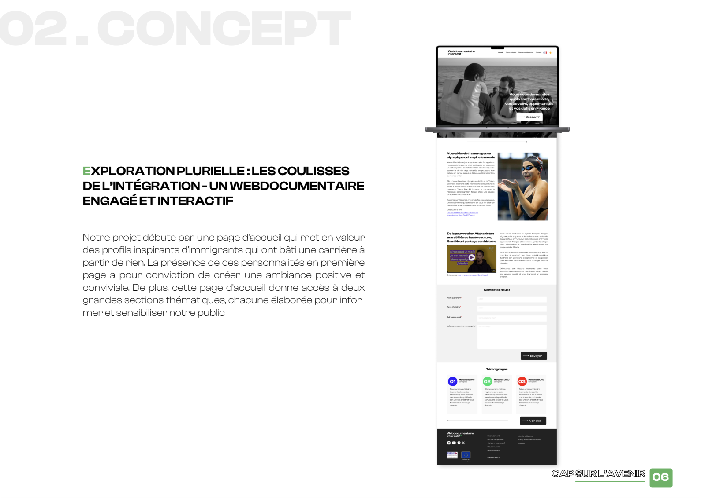
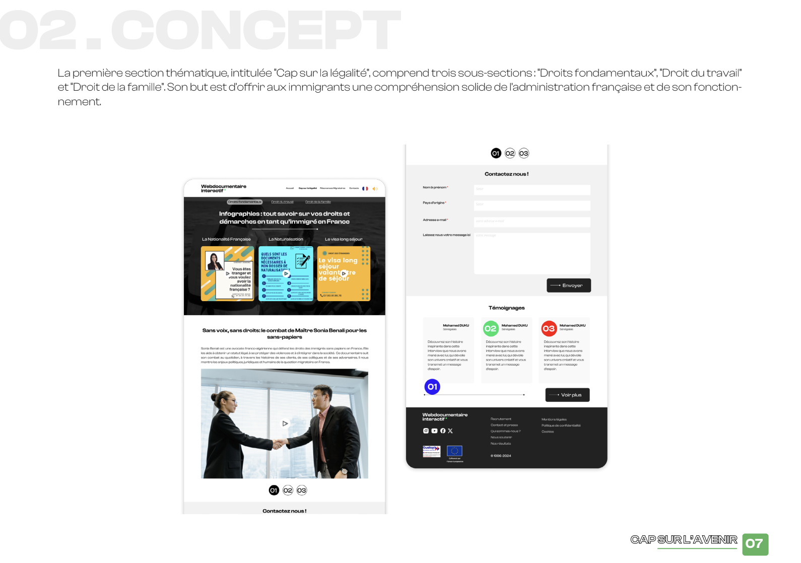

Cap sur l'avenir
Notre webdocumentaire "Cap sur l'avenir" s'inspire du documentaire "Premier de corvée" pour mettre en avant la réalité des travailleurs clandestins en France et faciliter la compréhension du système administratif français pour les immigrants. Grâce à des vidéos d'infographie animée et des témoignages, notre projet cherche à créer un espace interactif pour partager leurs expériences et sensibiliser sur les défis de l'immigration en France.
 Objectifs du Projet
- Fournir des informations claires sur les droits des immigrants
- Créer un espace sécurisé pour partager des expériences
- Sensibiliser à la réalité de l'immigration en France
En comparaison avec une application, le webdocumentaire offre l’avantage d’être instantanément accessible sans nécessité de téléchargement. Les immigrants, souvent confrontés à des limitations de mémoire sur leurs appareils ou à des connexions internet restreintes, peuvent ainsi accéder facilement au contenu sans obstacles techniques. De plus, le format web est universellement compatible avec divers appareils, offrant une flexibilité optimale. Afin de rendre notre projet aussi inclusif que possible, nous avons mis en place une option dès la page d’accueil permettant aux utilisateurs de choisir leur langue maternelle. Cette fonctionnalité multilingue témoigne de notre engagement à respecter les langues parlées par les principales diasporas en France.